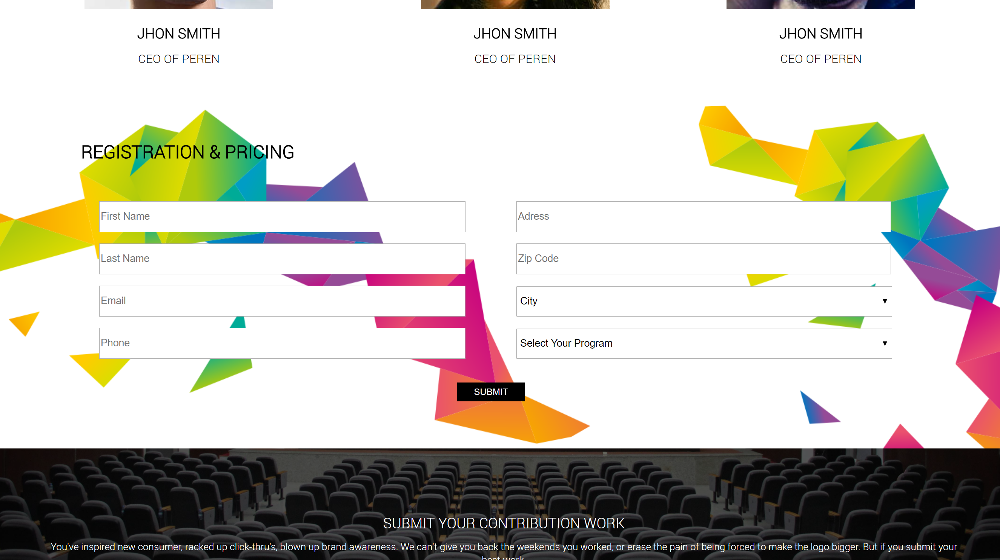
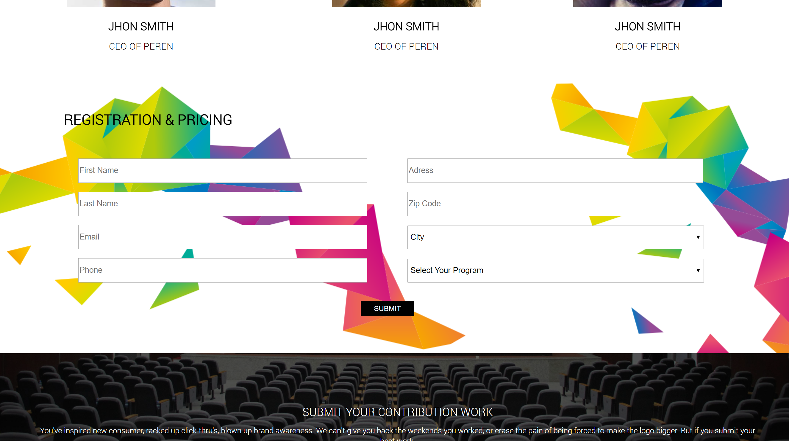

Nguyen Cong Thomas
Hi I’m thomas, I'm a student, currently in my first year of school learning web and applications development. This website is a project I worked on to be used as an online resume for people that could be interested in my profile.
This is a single page website, so feel free to scroll down or use the navigation menu up on the right to have a look around
 
